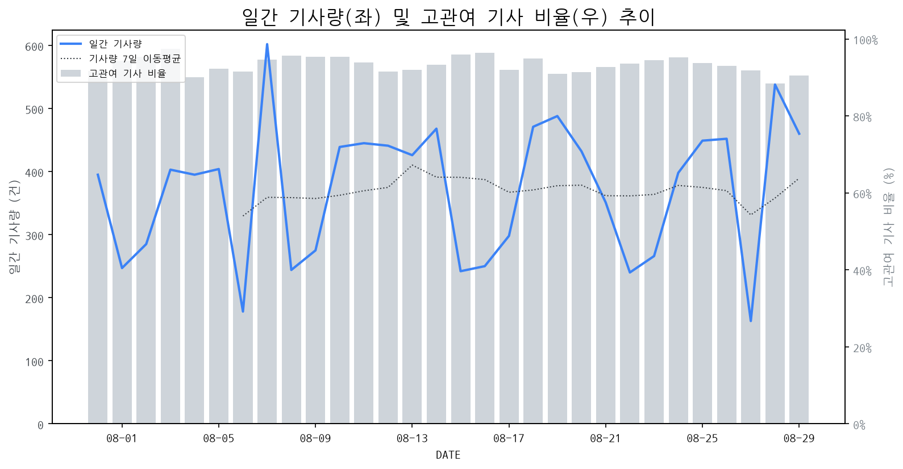

1
시장 활동 지표
기사량 추세 & 이상 징후 탐지
시장의 '전체 기사량'이 평소보다 비정상적으로 급증했는지(Spike)를 차트로 확인하고, LLM이 분석한 급등의 핵심 원인을 파악할 수 있음

고관여 기사란? 산업 연관 키워드로 수집된 기사들 중 디스플레이 키워드에 가중치를 반영하여 도출된 관련성 높은 기사
수집된 기사 수 (2026-08-29)
460
+92% WoW
기사량 변동 수준 (7일 이동평균 대비)
±6.7% 이하
2
오늘의 키워드
급격한 관심 ↑, 주목해야 할 키워드
1
byd
+1.8σ
BYD 신규 하이브리드 모델 '씨라이언 6 DM-i'의 한국 시장 출시 및 기술력 호평으로 주목받았습니다.
Related Metrics
금일 언급량: 4, 전일 대비: +3
Interpretation
신규 시장 개척 신호
Next Step
'byd' 관련 상세 기사 및 경쟁사 반응 모니터링
3
실시간 Risk 키워드
경계해야 할 시그널 탐지
특정 토픽의 부정 감성 점수가 급등할 때 이를 즉시 탐지하고, "근거 기사" 링크를 통해 리스크의 실체를 빠르게 파악할 수 있음
키워드 분석 결과, 오늘은 걱정할 만한 하락 신호가 없습니다. (부정 언급량 변화: +1.5σ 이내)
4
주요 이벤트 모니터링
실시간 산업 동향 파악을 위한 주요 활동
최근 발생한 주요 기업들의 신제품 출시, 투자 등 주요 이벤트를 제공하여 매일 경쟁사 동향을 확인할 수 있음
삼성전자와 LG전자가 1초에 1000장 이상의 화면을 갱신하는 초고주사율 디스플레이 시장을 열고 프리미엄 게이밍 시장을 공략한다. 이는 기존 주사율 경쟁을 넘어선 새로운 차원의 기술력을 선보이며 시장 판도를 바꿀 것으로 예상된다.
Impact
초고주사율 디스플레이의 상용화는 게이밍 모니터 및 관련 디스플레이 시장의 기술 표준을 한 단계 끌어올리고, 고성능 디스플레이 수요를 더욱 촉진할 것이다.
Next Step
경쟁사의 기술 동향을 면밀히 모니터링하고, 자체적인 초고주사율 기술 개발 및 생산 역량 강화에 집중하여 프리미엄 시장에서의 경쟁 우위를 확보해야 한다.
폴더블 폰이 태블릿을 대체할 가능성이 제기되었으나, 높은 가격과 내구성 문제는 이를 가로막는 주요 요인으로 분석되었습니다. 두 기기 간의 기능적 차별화 및 사용자 경험 개선이 향후 시장 성장에 중요할 것입니다.
Impact
폴더블 폰 시장 확대는 플렉서블 디스플레이 수요 증가로 이어져 관련 디스플레이 제조사에게 새로운 기회를 제공할 수 있습니다.
Next Step
내구성 및 가격 경쟁력 확보를 위한 차세대 폴더블 디스플레이 기술 개발 및 생산 단가 절감 방안 모색이 필요합니다.
중국 CXMT가 개발한 DDR5 메모리 칩이 SK하이닉스 제품과 성능 1% 차이로 추격하며 중국 반도체 경쟁력을 부각시키고 있습니다. 이는 중국이 핵심 반도체 분야에서 글로벌 강자들과의 격차를 줄여나가고 있음을 보여줍니다.
Impact
CXMT의 기술력 향상은 글로벌 반도체 시장의 경쟁 구도를 변화시키고, 특히 가격 경쟁력 측면에서 기존 선도 기업들에게 압박으로 작용할 수 있습니다.
Next Step
디스플레이 제조 기업은 CXMT와 같은 신흥 경쟁자의 기술 발전 속도를 면밀히 모니터링하며, 차별화된 기술 및 원가 경쟁력 확보 전략을 강화해야 합니다.
김대호 분석가의 진단에 따르면, 대만 반도체 산업의 수호신으로 불리는 미디어텍이 핵심적인 역할을 수행하고 있습니다. 이는 미디어텍의 기술력과 시장 영향력이 반도체 생태계 전반에 걸쳐 중요함을 시사합니다.
Impact
미디어텍의 경쟁력 강화는 디스플레이 드라이버 IC 등 관련 부품 시장에서의 가격 및 공급 안정성에 영향을 미칠 수 있으며, 기술 혁신을 주도할 가능성이 있습니다.
Next Step
디스플레이 제조 기업은 미디어텍과의 협력 관계를 강화하고, 차세대 디스플레이 구동을 위한 미디어텍의 기술 로드맵을 면밀히 파악하여 선제적인 대응 전략을 수립해야 합니다.